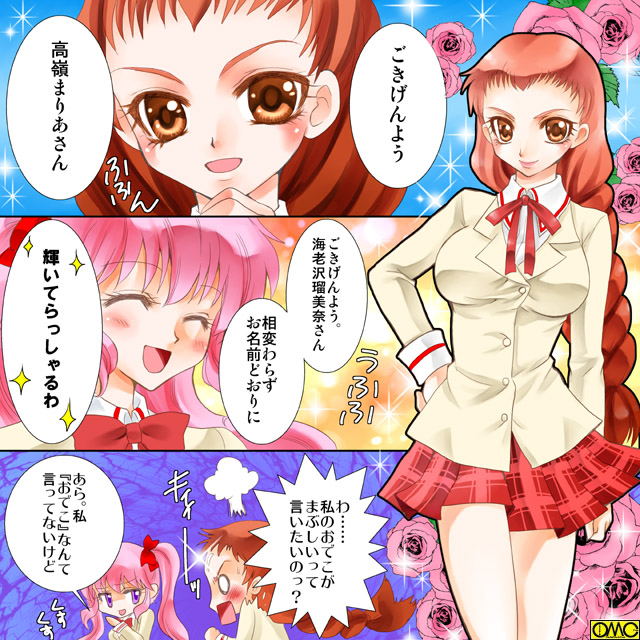
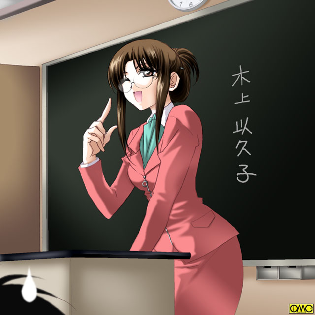

第１話「Ｗｉｌｄ Ｈｅａｖｅｎ」Ｐａｒｔ２
校門をぬけ校舎へと。普通なら下駄箱へと向かうが、ここでは誰もが中庭の掲示板に向かっていた。
新しいクラスがここで発表されていたのが理由である。
まりあとて例外ではない。彼女はとりあえず順番に探すべく２−Ａから見ようとした。
その眼前に一人の少女が。まりあをにらみつけている。
背はまりあよりやや高い。体形は良くも悪くもない。胸はまりあより若干大きい。
それよりもあまりにも目立つ特徴がひとつ。
極端におでこが広いのである。そして前髪も短いので余計に。
目。鼻。口などは形がよいので配置を間違えていると言うか。
その額だからか太目の眉がやたらに目立つ。
前髪の分まであるわけではなかろうが後ろ髪は長い。それを太い編みこみをして処理している。
先端が広がっているためまるでエビを背中から見たような印象の髪型だ。
「ごきげんよう。高嶺まりあさん」
トゲの混じる声で朝の挨拶。言葉と裏腹に友好的な雰囲気は皆無。
「ごきげんよう。海老沢瑠美奈（えびさわ るみな）さん。相変わらずお名前どおりに輝いてらっしゃるわ」
それまで優介相手に見せていた甘えたような表情はどこへやら。意地の悪いところを見せる。
「わ……私のおでこがまぶしいって言いたいのっ？」
瞬間湯沸かし器。まさにそんな感じであっという間に沸騰する。
「あら。私『おでこ』なんて言ってないけど」

このイラストはＯＭＣによって作成されました。
クリエイターの猫宮にゃおんさんに感謝！
してやったりの笑み。一瞬は言葉につまるが強気をとりもどす瑠美奈。
「くっ。相変わらず性格の悪い女ね。見てらっしゃい。同じクラスになったら毎日いたぶってやるわ」
「ふん。確かにそのおでこはまぶしくて手ごわそうだわ」
真顔で言うまりあ。
「おでこは関係ないでしょ！」
火花を散らす両者。それを遠巻きに見ている面々。
「うわ。また始まったよ」
美少女同士のケンカだが周辺は慣れているらしく呆れ顔。
「実家がライバルグループどうしだもんな」
「いや…むしろ高嶺が海老沢のデコをからかい続けたのが原因らしいぞ」
そんな風評は無視して二人はにらむように掲示板を。
２−Ｂに瑠美奈の名があった。しかしまりあの名前はない。
「ふん。残念だわ。直接対決は出来ないと言うわけね。命拾いしたわね」
「ええ。助かったわ。まぶしくて目を悪くしそうだもの」
「あたしのおでこは鏡なのッ！？」
とにかく両者は違うクラスに。もしかすると仲の悪さを考慮して意図的にしたのかもしれない。
「おはよう。スィートハニー。今日も綺麗だよ」
瑠美奈が離れたと思ったら今度は恭兵がよって来たまりあである。
「……貴方とも同じクラスはもうたくさんだわ」
美少女台無しのしかめっ面。
学校一の美男。恭兵はその美貌を鼻にかけて女子生徒をはべらせていた。
それがまりあには気に入らない。
さらには自分をその取り巻きにしようとしているのがみえみえで、どうしても態度が辛らつになる。
余談だが今のまりあの台詞からわかるとおり、この二人は一年のときは同じクラスだった。
その間ずっとアプローチをかける恭兵と、肘鉄を食らわせ続けたまりあ。その図式である。
「あれほどの美男子に迫られているのに」
女子どころか恭兵と同性である男子にも不思議に思われていた。
あまりに美男子過ぎて妬むことも出来ないレベル。
その求愛を突っぱね続けるからには誰か他に好きな男がいる。それが男子たちのまりあに対する考えであった。
（キョウ君……）
部活の時は快活ななぎさも、恋する相手の前ではしおらしくなる。
しかし思う相手にはあまりにもライバルが多すぎた。それゆえどうしても臆病になる。
唯一のアドバンテージは幼なじみと言うところ。
だが逆にそれゆえのトラウマもある。
白く細い脚を包むストッキングが、仮面のように見えた。
「おーっ。綾瀬。おはよーっ」
物思いにふけっていたなぎさは少年の声に驚く。そして現実に引き戻される。
「か……風見君。おはよう…」
一転して拒否の表情を浮かべる。
「また同じクラスだといいな」
それをまったく意に介さず能天気に笑って言う裕生。
「そうだね。でも、あたしはスタントなんてやんないからね」
「またまたぁ。もったいないぜ。それだけスタイルと運動神経がいいのに」
まりあと恭兵が学校一の美男美女なら、綾瀬なぎさと風見裕生は身体能力ナンバーワンである。
なぎさは学校の体育関係の記録は総なめにしていた。
一方の裕生も所属の体操部で高校生レベルをはるかに超える演技をこなしていた。
さらには小学校から剣道。柔道。空手をやっていてそれぞれ有段者である。
親しげに話す裕生となぎさを見てため息をつく詩穂理。
彼女は一年の時のテストはすべて一位を取るほどの秀才だったが、反面スポーツはまったくダメであった。
典型的な体育会系の裕生を相手にはそれがネックと思っていた。
（なんで私ってこんなに鈍いんだろ？）
無意識に左手で長い髪を弄る。彼女は左利きだった。
右利きに有利な社会で左利きのまま成長すると言うことは、よほど放任主義か、あるいは本人がガンコかである。
詩穂理は後者。それどころか本来は右利きなのである。
ところが幼い頃の裕生を真似して左手を多用するようになった。
親がいくら言っても頑として左手を使い続けた。それが裕生との絆のように思えた…幼い彼女はそこまでは理解してないが、そう感じていた。
右利きばかりの中で二人だけが左手でものを行う。それが一体感を生んでいたのだ。
ちなみにある理由から裕生は両利き状態。どちらの手でも筆記も食事もこなしていた。
しかし詩穂理は箸も鉛筆も左手で持つ。
「槙原」
そんな詩穂理に頭上から声が。厳つい顔の大きな少年が優しい表情で声をかけていた。
「おはよう。大地君」
にっこりと微笑む詩穂理。女の子ならではの愛想であり、他意はない。
しかし彼はその風貌と巨躯から怖れられていた。
何もしてなくても勝手に恐怖感を持たれて、距離を置かれていた。寡黙なのも災いした。
だが詩穂理はまったく関係なく彼に接していた。それゆえ彼のほうも詩穂理には特異な感情を抱いていた。
「また同じクラスだといいですね」
これもいわば社交辞令。
「そうだな」
それでも大樹にはうれしかった。
（うわぁ……大ちゃんのことを恐がらないでくれるのはいいけど、あの人ちょっとライバルになりそうですぅ）
大木の枝にとまる小鳥のような状態の美鈴。実は１５０センチに届かない。
さらにはショートカットが幼い印象に拍車をかけていた。
そして幼さを顔以上に強調しているのが胸元であった。
高校二年生だがかなり薄い。中学時代はＡＡＡカップだったのが高校一年でＡＡ。そしてこの春にやっとＡに届いた。
一方の詩穂理は太く見えるがそれだけ胸元も大きい。
別に大樹は胸フェチではないが、それでもやはり脅威に感じていた。
「美鈴」
彼女を下の名前で呼び捨てで呼ぶ男性は限られている。家族以外では幼なじみの大樹。そして
「水木君」
そう。水木優介であった。
「クラス分け見た？ また同じクラスかな？」
「ううん。まだ見てないの」
「それじゃ一緒に見ようか？」
まりあに対する冷たさを微塵も見せない。笑顔で接しているとなおさら女の子のような顔だ。
「う……うん」
いくら美少女のような風貌の優介とて男ではある。
美鈴としては大樹の前で他の男と親しげにして見せたくはなかった。
しかしそれを救ったのがまりあである。
「あっ。優介ーっっ」
笑顔で駆け寄りあっという間に腕を取って連れ去る。
当の優介は嫌そうにしていたが、美鈴にして見たら助かった。
そしてクラスを確認する。
「げっ」
再び美少女台無しの表情。
「スイートハニー。また同じクラスになれたね。嬉しいよ」
バラでも散らしかねない恭兵である。
「おーっ。やったじゃん。綾瀬。オレ達また同じクラスだぜ」
「そうだね」
なぎさが嬉しそうなのはそちらではない。恭兵と同じクラスだったのだ。
「２−Ｄか」
自分のクラスを口に出してつぶやく大樹。
「そうですね。また一緒ですね」
これは詩穂理。彼女が一緒であることを喜んだのは風見裕生のこと。
「大ちゃん。今度は同じクラスだね」
心底嬉しそうにピョンピョン飛び跳ねる美鈴。
「ああ」
別に嫌っているわけではない。極端に言葉が少ないだけである。
「するとぼくともクラスメイトだね」
優介が美鈴と言うより大樹に言う。その「おかしな表情」…そう。男が男相手にはしないであろう表情の意味はあとで痛烈に思い知らされる大樹である。
そして八人の少年少女は、新しいクラス。２年Ｄ組の教室へと移動する。
暫定的に出席番号順に座っているクラスの面々。既に始業式は終えて第一回目のホームルームを待つ。
やがて担任教師がやってきた。
始業式と言うせいもあるのかスーツ姿。プロポーションのよさが浮き彫りにされている。
おろせば背中に達するであろう髪を纏め上げている。
年に比べて若い……と言うより「幼い」印象の顔立ち。それでも大人の女性。それも美女と呼べる顔だ。
メガネが知的な印象。そしてそのメガネの丸さが柔らかい印象を与えていた。
第一印象は「優しそう」。老若男女を問わずそう答えるであろう女教師。
彼女は教壇に立ち、クラスメイトの顔を見渡すと息を吸い込み、よく通る綺麗な声で第一声を発した。

このイラストはＯＭＣによって作成されました。
クリエイターの早真さとるさんに感謝！
「みなさん。こんにちは。今日から皆さんの担任になる木上以久子。１７才でーす」
「…………おい！ おい！」
全員で突っ込みを入れる。新しいクラスが一つにまとまった瞬間だった。
「バカなことを言ってないでください」
やはりというか詩穂理が一言言う。
「違うの。先生と生徒という上下じゃなくて、私もクラスの一員というつもりで『１７才』って言ったのよ」
理由になってない理由というか……
「本当はいくつなんですか？」
詩穂理の真面目な性格が出て容赦ない。教師の方が負けた。
「…………２７歳」
ぼそっと本当の年齢を明かす。確かにそれなら納得がいく。
（うわ！ あのメガネ恐ぇ）
（よく担任相手にあそこまで）
男子の一人がそんなことを思う。
それほど詩穂理の人間の固さがよく出ていた。
何とか立ち直った担任。一年のときもＤ組担当だった。だから１−Ｄだった面々はこのキャラクターを熟知していたが、そうではなくてこの年から初めて担任となる面々はかなり面食らっていた。
（もっともこの『１７才』のネタは一年のときは生徒たちが１５〜６なので封印されていたが）
一応は国語の授業で知ってはいたものの、ここまで強烈とは思わなかった。
反面、その愛らしい大人振りが一発で受け入れられた。
何しろその容姿もすばらしい。男子と女子。形は違えど憧れを抱かせ、そしてこのちょっと愛嬌のある性格が親しみを持たせていた。
「それじゃあみなさん。これから一年間のクラスメイトですから、自己紹介をお願いします」
これは当然の流れ。出席番号順に男子六人を終えたら、女子六人という具合に交互に行うことになった。
「それでは出席番号一番。浅倉君から」
「はい」
浅倉と呼ばれた男子から教壇の位置に出て自己紹介となる。
全員に顔を見せる目的である。
一番の浅倉光太郎。二番の江藤新太郎が終わり出席番号三番の生徒の番となる。
赤毛の短髪が逆立っている少年は、とりあえず前に出る。そこから中央に出るわけだが軽くステップを踏む。
そして軽快にジャンプすると空中で一回転。よく知らない面々には驚きを与える。
「よっと」
機械体操の様にぴたっと着地を決める。それどころか足を大きく広げ、左腕を折り曲げて上に向け、右手を斜め下に払う。
テレビのヒーローのようにポーズを決めていた。
「出席番号三番。風見っ。裕生ぉっ」
「おおーっっっ」
期せずして拍手が沸き起こる。
「あ……あの、風見君。これはどういうことかしら？」
「自己紹介っすよ。先生。オレ体操部と映研やってますから」
「まぁ、それであんなに身が軽いのね」
（いや……ツッコミどころ間違えてますから）
素で驚いた担任に、心の中で突っ込みを入れる生徒たち。
早くもボケと突っ込みの関係が確立されつつある。
「でも……体操ならそのポーズはおかしくないかしら？」
「だから映研もやってますんで。オレ、スーツアクター志望ですから」
「スーツ……アクター？」
知らなくてもそんなに恥ではない単語である。
「広い意味では色々ありますけど、オレの目指しているの特撮のヒーロー物のヒーロー役ですから」
「そうなの」
どうやら特撮には疎いらしくよく理解できない。
（相変わらずだなぁ……ヒロ君）
メガネの奥の目が知らず昔を懐かしみ、優しげなものになっていた詩穂理である。
（ちっちゃいころの夢をずっと追っかけているのね。それともお父さんをかしら？）
裕生の父がスーツアクターだったのだ。
子供のころ、父親が大好きなヒーローの正体と知った時の裕生の興奮は詩穂理もよく覚えている。
以来彼は特撮ものから卒業できない。
中学時代はアニメに傾倒する少年と、ボクシング物に傾倒する少年との三人でトリオ扱いされるほどの「オタク」ぶりだった。
（私もヒロ君追っかけていたらこんなになっちゃったし）
詩穂理は右腕の腕時計を見る。
そして左手でシャープペンシルをくるくる回して見せる。
「はい。ありがとう。それじゃ次の人」
詩穂理が懐かしんでいるうちに裕生の自己紹介は終わりになった。
一番遠い２年Ａ組。ここでも同様に自己紹介が進行していた。
「里見恵子なんだニャン。よろしくですニャン。ミケって呼んで欲しいんだニャン」
言葉遣いからしてべたべたな「ネコミミ少女」のコスプレだった。
猫のような手付きをするメガネの少女。手つきだけではない。
彼女の頭には「ネコミミ」が。もちろんカチューシャである。
カチューシャそのものは禁じられていないが「ネコミミ」つきとなると問題である。
さらにはスカートの中から「尻尾」まで。
「こら……なんだその服装は？」
コワモテの中年男性が、顔のイメージとぴったりの声で注意をする。
「えーっ。尻尾禁止なんてされてないですぅ」
こちらは『黄色い声』の里見恵子。
「当たり前だ！！ どこにそんな馬鹿を断る校則がある」
思わず怒鳴りつける担任であり、生活指導の若元典生。
ちなみに元は機動隊にいたという異色の経歴。
そして機動隊出身は伊達でない迫力の怒鳴り声だった。
「でもでも。はっきり禁止されてないからやってもいいんですぅ」
どこまで演技で、どこから本気かわからない恵子。
「自己紹介って言うから、一番わかりやすく趣味のコスプレをアピールしただけですぅ」
本当にそれだけである。特にそれ以外の理由はなく彼女は「コスプレ」していた。
ちなみに、かけているメガネも伊達である。
「もういい……席に戻れ」
話していて、本気で頭痛をおこして来た若元である。
四番の菊村晃一。五番の小村幸広。六番の斎藤淳が終わった。
「それじゃここで女子に移りましょう。３１番。綾瀬さん」
「はい」
スレンダーな少女が位置に出る。細身だが胸元は普通よりやや大きめ。それがあまり印象には残らない。
むしろポニーテールがトレードマークの一つだった。
もう一つはその足を包むストッキング。校則で禁止されてはいない。
しかし例え夏でも絶対に生足を見せないので特徴となっている。
例外が夏の水泳だけで、それ以外ではなぎさの素足を見た生徒はいない。
私服ではスカートですらなくパンツルックだから徹底している。
「綾瀬なぎさです。一年のときはＤ組。陸上部所属です」
おおという声が上がる。それは噂のアスリートの実物を見た感嘆から来る声。
なぎさはちょっと恥ずかしそうに俯いてしまう。
「綾瀬さんは一年のときに競技会で記録を出したんですよ」
「せ……先生。それはいいですからっ」
「どうして？ 立派なことじゃない？」
確かに自慢の必要はなくとも、他者に紹介される分には恥ずべきことではない。
赤くなりつつもクラスをチラッと見渡す。
暫定的に座っている席順。その右から二列目。前から三番目の金髪の少年と目が合う。
思わずにこっと笑みが出たなぎさだったが、あちこちの女子が彼女に敵意を向けたため視線をそらした。
（何よ。あの女。陸上でいい成績だからって恭兵君に色目使っちゃって）
（筋肉女になんか渡さないわよ）
（あんな女よりは私の方がまだ可愛いし）
少女といえど「オンナ」である。凄まじい嫉妬の嵐が吹き荒れる。
それは教室の空気を変えてしまうに充分なものであった。
（やだやだ。女って。本当に嫉妬深いよなぁ）
自分も女のような姿の水木優介が、心底呆れたように。心の中でつぶやく。
彼は嫌悪感を隠そうともしない。
そしてそれを見ていたまりあは
（優介……まさかカミングアウトなんかしないでしょうね？）
ある不安に駆られていた。
「そ……それじゃ続けましょうか。３２番の臼井さん」
空気を戻すべく強引なのを承知で担任は自己紹介を再開した。
席に戻りつつなぎさは痛感した。
（やっぱりライバル多いなぁ……はぁ、１００メートル走の方が気楽だよ…）
ため息は不幸を逃がすというが、自分の恋する相手の「取り巻き」の多さに気が滅入り、どうしてもため息をつかずにいられないなぎさであった。